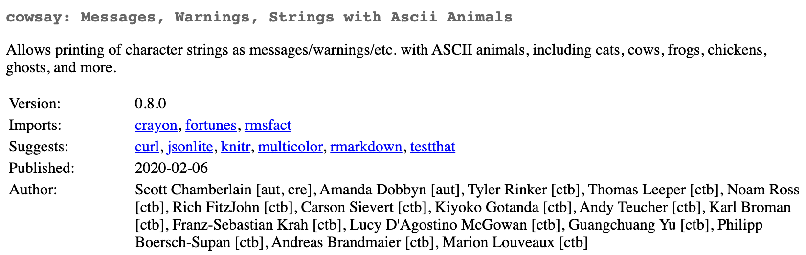

staypuft: object validation and serialization
& should this even be a package?
Scott Chamberlain ( @sckottie)
pain point: serialization
converting data in one format to another format
especially painful when complex
other languages have good ideas
marshmallow - a Python library
A lightweight library for converting complex objects to and from simple Python datatypes.
similar art in R
assertr (assertions for analysis pipeline)
validate (very similar to assertr AFAICT)
errorlocate (find errors in datasets)
any others?
why?/use cases
data validation: lots of potential users
remote data sources can change: schemas help validate and catch changes
use in scripts (most researchers): help raise issues with scripts as time goes on and data inputs change
using R with plumbr or similar: convert data to serve to API or consume from API request bodies
features
user created schemas
seralize among object types (R6/data.frame/JSON)
make dealing with nested data easier
specify required fields
specify default fields
specify order of output fields
To do
Nested data - this could be huge, reducing pain in flattening out nested data
Lots more 'field' types: url, email, (domain specific types)
Probably add an easier to use interface, less R6'y
wait ...
should this even be a package though?
When I should not make software
the pkg doesn't solve actual use cases
there's significant overlap with existing solutions
and maintainers are responsive
I can't envision maintaining the package for the long run
I lack sufficient knowledge in the topic area
there's higher priority/lowering hanging fruit
not arguing against sillyness

elephant in the room ...
aren't you just re-making S4?
Use cases
For staypuft, likely many users
Everyone deals with objects in R
higher priority/lower hanging fruit
I've got many other packages
Many of which have many users
What if new package has a huge impact though?